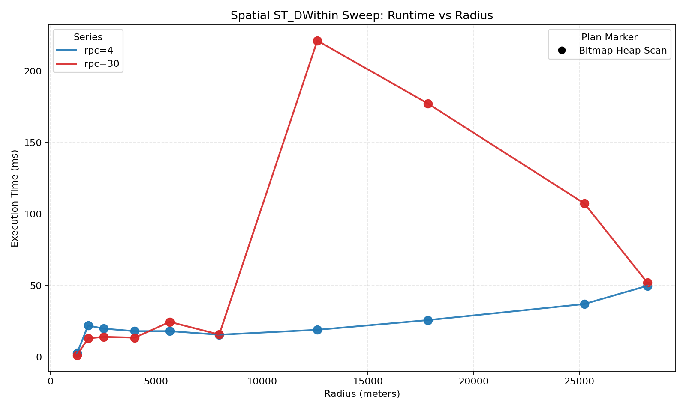
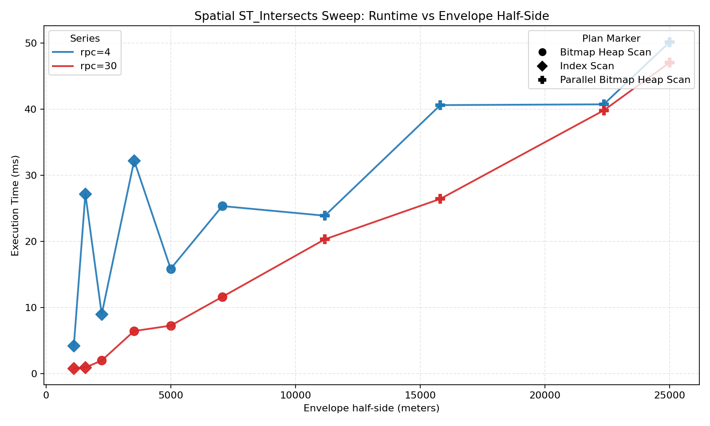
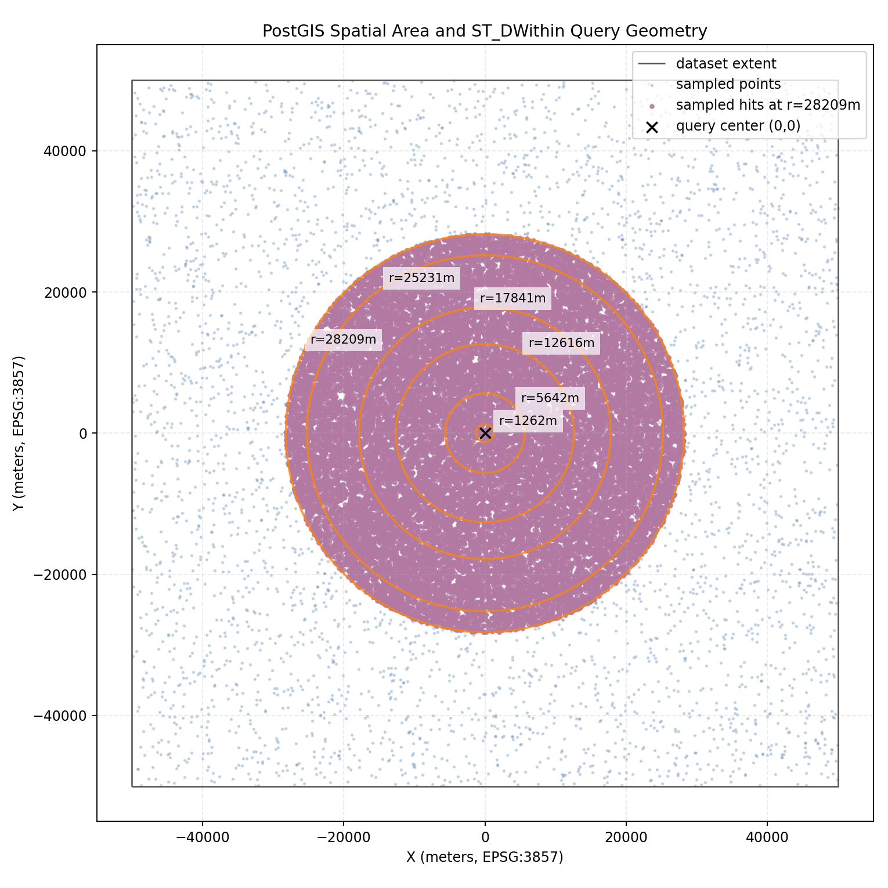

I wanted to replicate the core idea from Tomas Vondra's post on random_page_cost, but for PostGIS workloads.
The original point is not "index scan is always bad" or "seq scan is always good." The point is that planner cost crossover and runtime crossover can diverge, and that can produce a suboptimal plan region.
Reference: The real cost of random I/O
Environment:
EPSG:3857geomDataset extent is synthetic and centered around (0,0), approximately [-50000, 50000] meters on each axis.
Machine specs:
arm64 architectureBefore the spatial runs, I added a forced-plan crossover probe to visualize:
In this run:
~1.55%~4.89%Implication: tuning decisions based only on default planner costs can be misleading. If cost crossover and runtime crossover do not align, there is a selectivity band where the planner may pick a slower path. In practice, this means random_page_cost should be calibrated against measured runtimes on your own workload, not treated as a one-size-fits-all constant.
ST_DWithinI swept radius selectivity from very small up to about 25% area-equivalent selectivity, and compared:
random_page_cost=4random_page_cost=30
That happens because "same node type" is not "same actual work":
So this chart is a good reminder: plan label alone is not enough; you need BUFFERS, execution time, and repeated runs.
geom && envelope + ST_IntersectsI added a second sweep using square envelopes, which explicitly combines:
&&)ST_Intersects)
This pattern is common in real GIS queries. It highlights that:
The map below shows the synthetic extent, sampled points, query center, and selected radii used in the sweep.

random_page_cost as a workload calibration knob, not a fixed truth.EXPLAIN (ANALYZE, BUFFERS) with repeated measurements.From 2026-03-16-postgis-random-io/:
make initmake buildmake sweepmake compare RPC=30make graphmake isweepmake icompare RPC=30make igraphmake mapFrom 2026-03-16-random-io-cost/:
make crossovermake graph-crossover